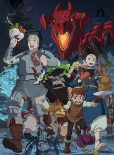
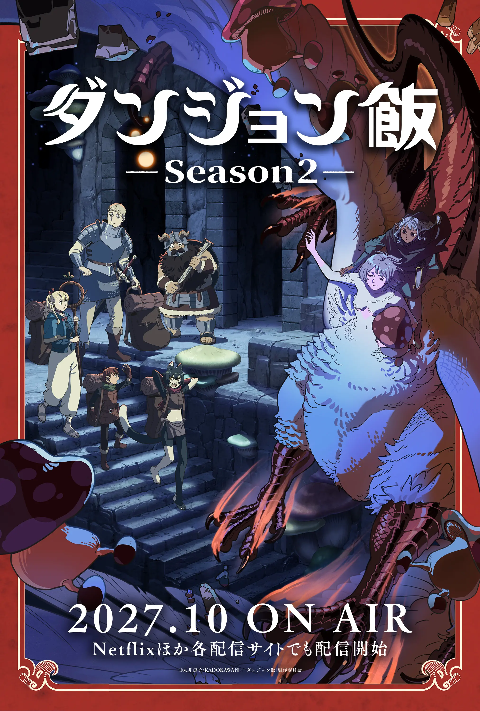

CHOOSE A SEASON
The official anime site confirms one released television season and a second season scheduled for October 2027. Season 2 is therefore presented as an announced/upcoming review preview, not as a released review.

THE DUNGEON AS KITCHEN
How Laios’s party turns monster hunting into a survival craft while the rescue mission steadily reveals its emotional stakes.

THE ROAD TO FALIN
An evidence-based preview of the announced continuation, its confirmed release window, and the story territory ahead.
OFFICIAL STATUS
The official anime news page announces Season 2 for October 2027 and identifies Netflix among its distribution platforms. The Netflix Tudum guide provides the platform’s series context.
AMAZON MERCH
No exact Amazon listing was asserted without a live product page that could be verified for title and availability. Search Amazon for the manga · Search Amazon merch.